明日もう一度来て下さい、本当のラザニアを食べさせますよ
明日もう一度来て下さい、本当のラザニアを食べさせますよ
…というのは嘘で、「俺が本当に食べたかったラザニア」であって、伝統的なラザニアかどうかは知らない。
事の発端は妻がラザニアを食べたいと思い立って買ってきたこの商品である。
まずあらかじめ言っておくと、この商品は値段を考えれば妥当だし、分かってて食べれば一切問題ない。しかし「今日はラザニアを作ろうと思ってる」と言われた後にこれを食べた俺は苦笑いしかできなかった。
もう一度言うけど、値段や手軽さを考えれば文句はない。しかしこの商品説明はどうかと思う… 詳細は書かないけど、気になる人は是非一度作って食べてみるように。
ともあれ、妻も自分達で作ったラザニアの味を知っているので、期待値と違って大分落ち込んでいた。そこで次の機会にラザニアリベンジするぞ！ということになっていたのだが、今日たまたま「あれ、今日ラザニア作ってる時間あるじゃん」ということになったので作る事になった。
最初に言っておくが、ラザニアは手作りするとやたらと仕込みに手間のかかる料理である。このためにわざわざ家庭でそれ用のミートソースを作るくらいだったら、うまいイタリアンをみつけて食べに行ったほうが良い。
こんなものを作るのはうちみたいに大量のミートソースが冷凍してあるような家庭でないとお勧めしない。良いですね？
この間低温調理肉会というのをやったのだが、その際肉が余った。目算で合計約3kgの牛ロースと、ラムショルダーだ。肉があまってしまったら煮込む、というのはセオリーが決まっている。うちの場合はミートソースにして冷凍してしまう。medium.com
というわけで我が家にはまだ2食分ほどミートソースが余っていた。このミートソースは牛肉とラム肉が入っているので味も強烈。まさにラザニア向きのミートソース。
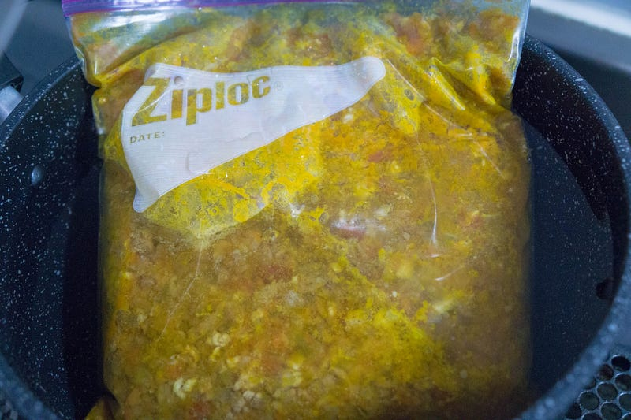
これを解凍してから、水分を飛ばす。結構ギリギリまで攻めたほうが良い。
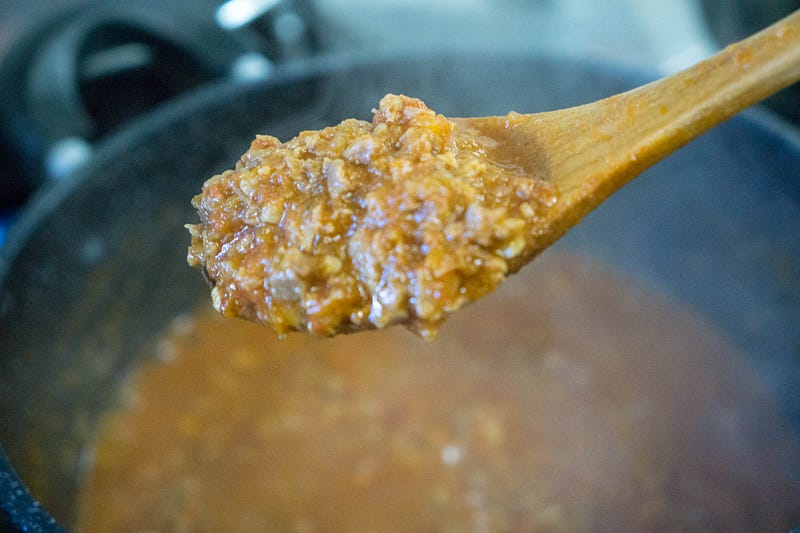
ラザニアの具が水っぽいと全体がぐちゃぐちゃになってキレイな断面ができないし、切り分けにくい。あと、少し塩味を濃いめにしておくとよい。
うちのラザニアは彩りのためのほうれん草と、風味のための茄子が定番となっている。
ほうれん草は本当に軽く茹でるだけ、そんなに量はいらないので、あまったら残りは後日おひたしに。ラザニアに使うほうれん草は上記のミートソースと同じ理由で、水分はキチンと切っておきましょう。
茄子は大量のオリーブオイルでかるく火を通す。
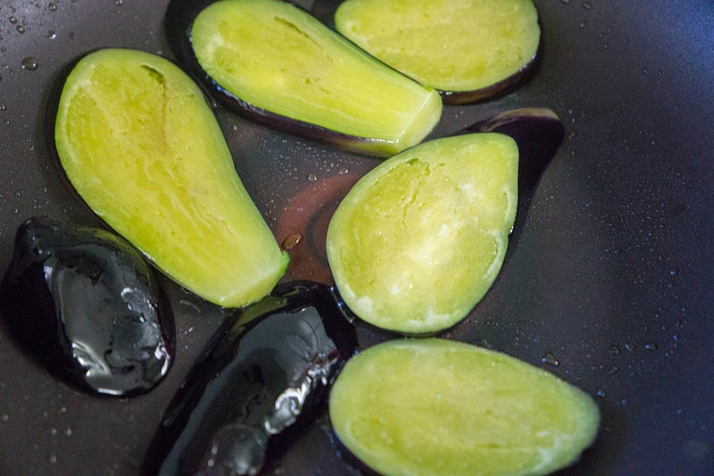
ポイントは大量のオリーブオイル、というところで、茄子はスポンジなのでアホみたいにオリーブオイルを吸うから。しょうがないので、一通り油が通るまでいれてあげましょう。
他の材料の準備ができたらラザニアを茹でる。
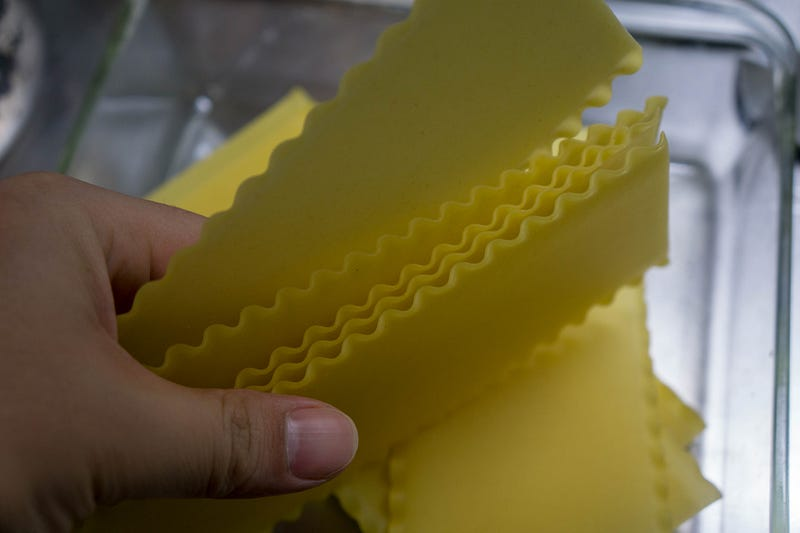
このがっしりしたパスタを茹でるときはいつも少しテンションがあがる。ところでこのパスタ、とにかくお互いくっつくので注意。茹でる時に軽くオリーブオイルを入れておくのが推奨されているのでそれをするのを忘れないよう。
なおうちでいつも使っているのは De Ceccoのやつです。特に理由はない。
ディ・チェコ No.1ラザーニャ [並行輸入品] 500gがパスタストアでいつでもお買い得。当日お急ぎ便対象商品は、当日お届け可能です。アマゾン配送商品は、通常配送無料（一部除く）。www.amazon.co.jp
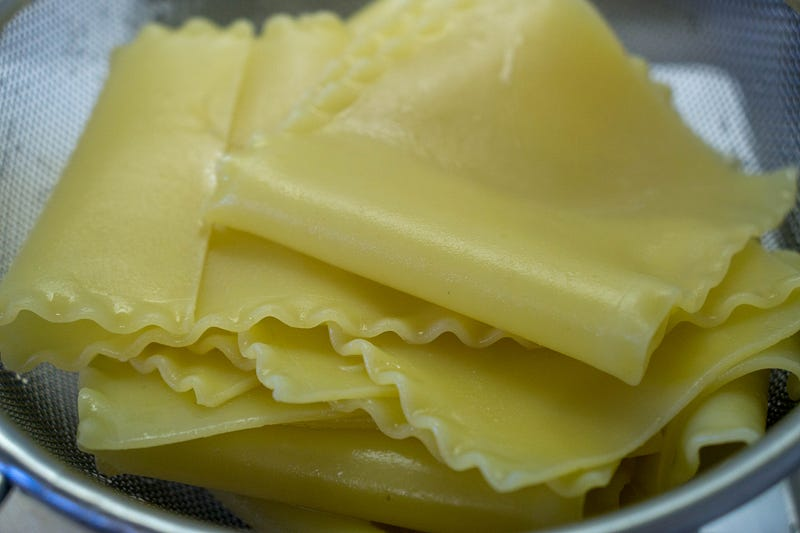
あと、茹でている時に柔らかくなってきたらなるたけ箸などを上手く使ってくの字にしておくと良い。
ここからは工作タイム。もっとも基本的な工程としてはラザニア→ミートソース→ホワイトソースを順番に重ねていくだけ。ホワイトソースはハインツの普通のやつ。
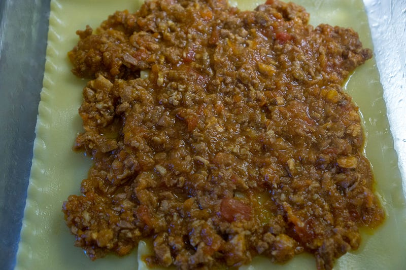
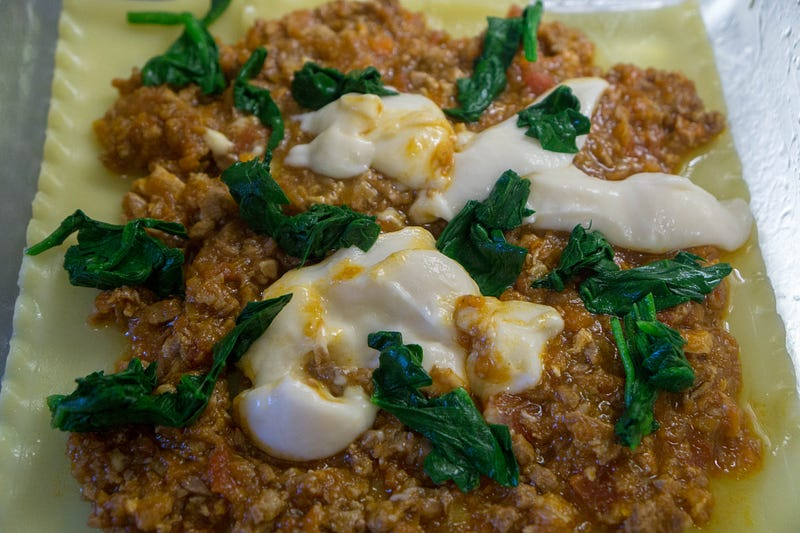
うちのはここでほうれん草投入。
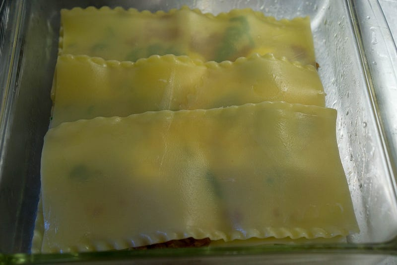
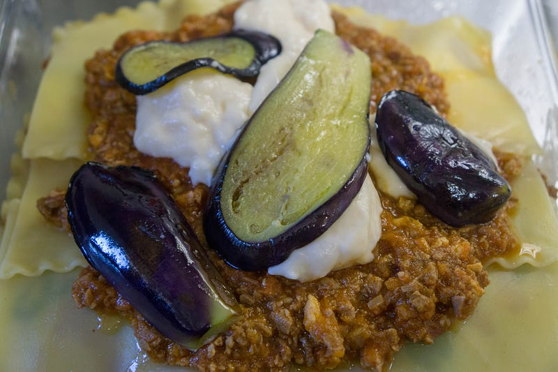
次の層は茄子。うちはこれが全部で4層。
そして最後の1層を載せたらチーズ。普通のピザに使うとろけるチーズで良いですよ。
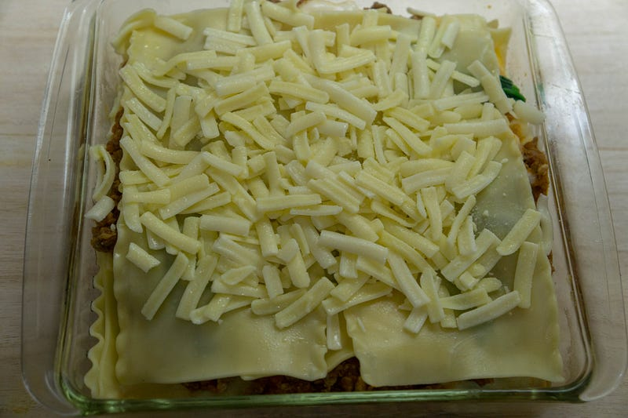
こいつをオーブンで180℃で30〜40分。最後に温度をぐっとあげて（うちの場合最高温度は250℃）、5分〜10分かけて焦げ色をつける。
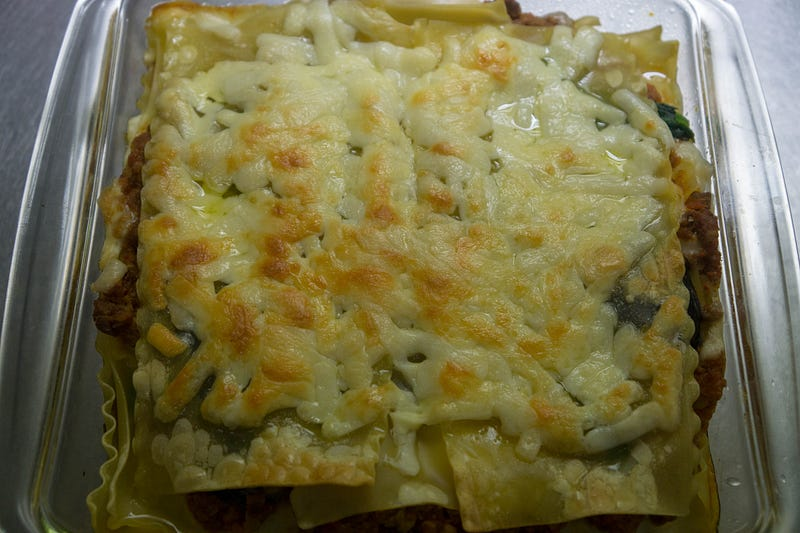
今回はちょっと端まで具やチーズが載らなかったので、端が乾燥してしまったけど、まぁそこは自家製のご愛敬。
今回は水分の調節がかなりうまくいったので切り口もかなり美しい。
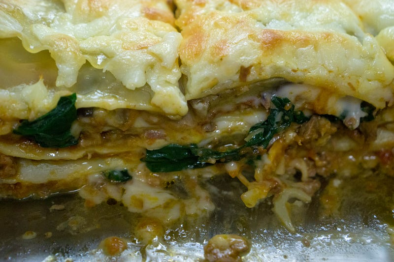
というわけで本当のラザニアが食べられて幸せな夕食であった。
なお野菜をすっとばして、濃厚なだけのラザニアも作れるんだけど、かなり強い味になるので、それをするなら少量提供するつもりで加減したほうがよい。メインディッシュにするならうちのかそれ以上野菜を入れるのをおすすめします。
最初に書いたようにミートソースを作るところから始めると半日仕事になるので、暇な時か、すでにミートソースがある状態から料理を始めましょうね。